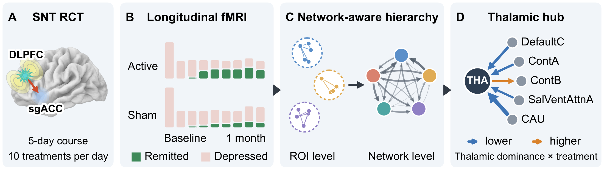
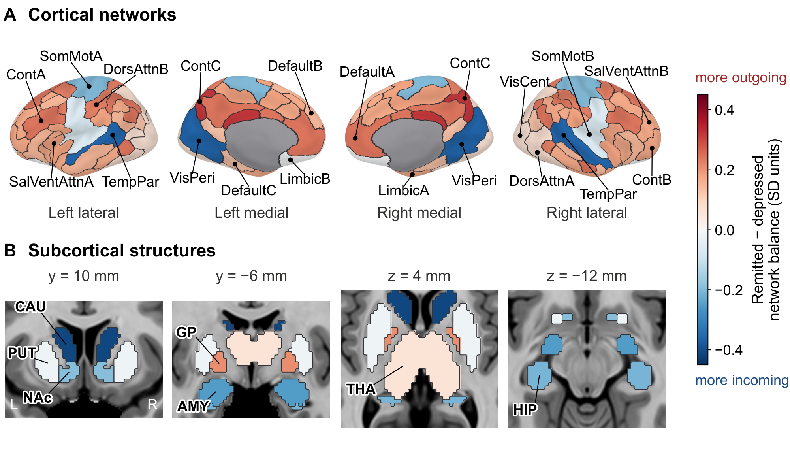
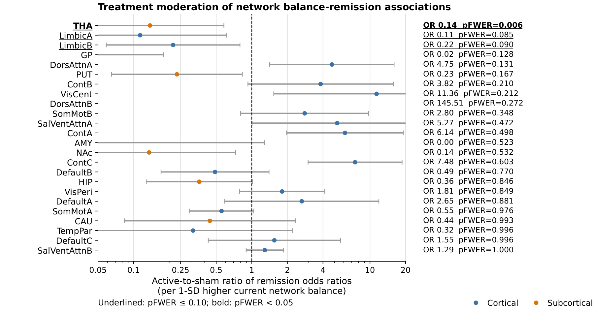
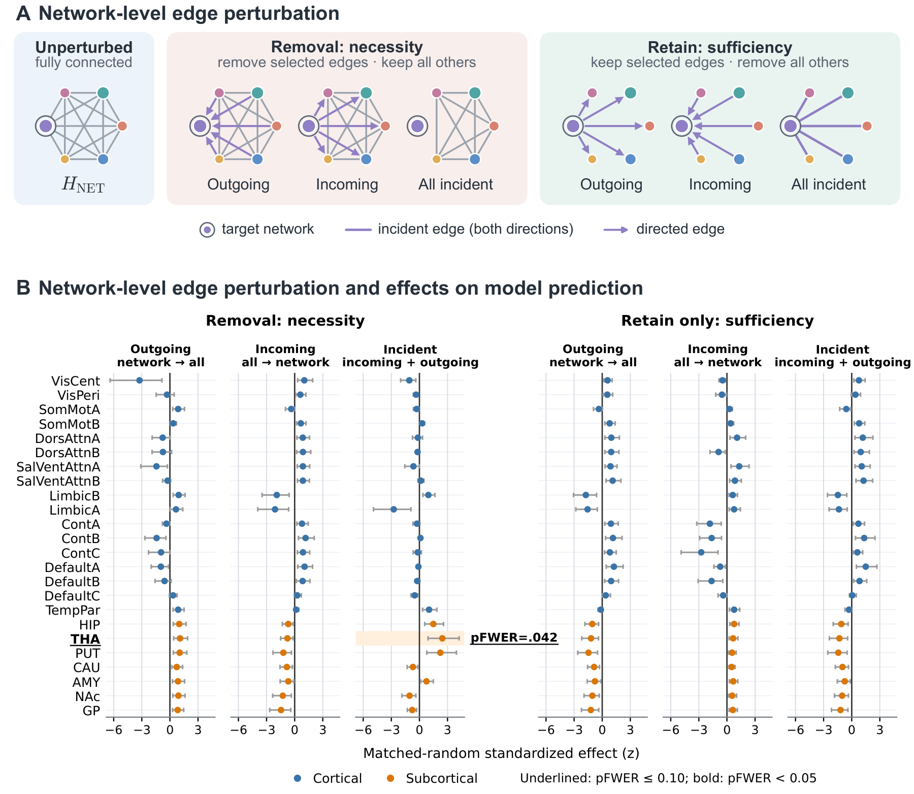
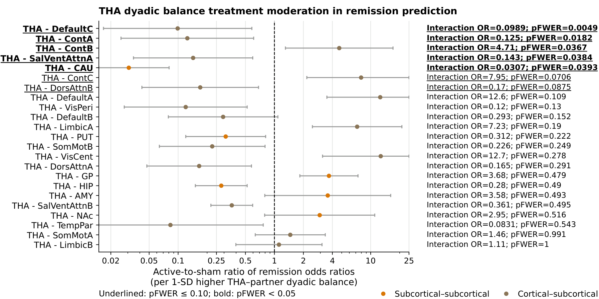
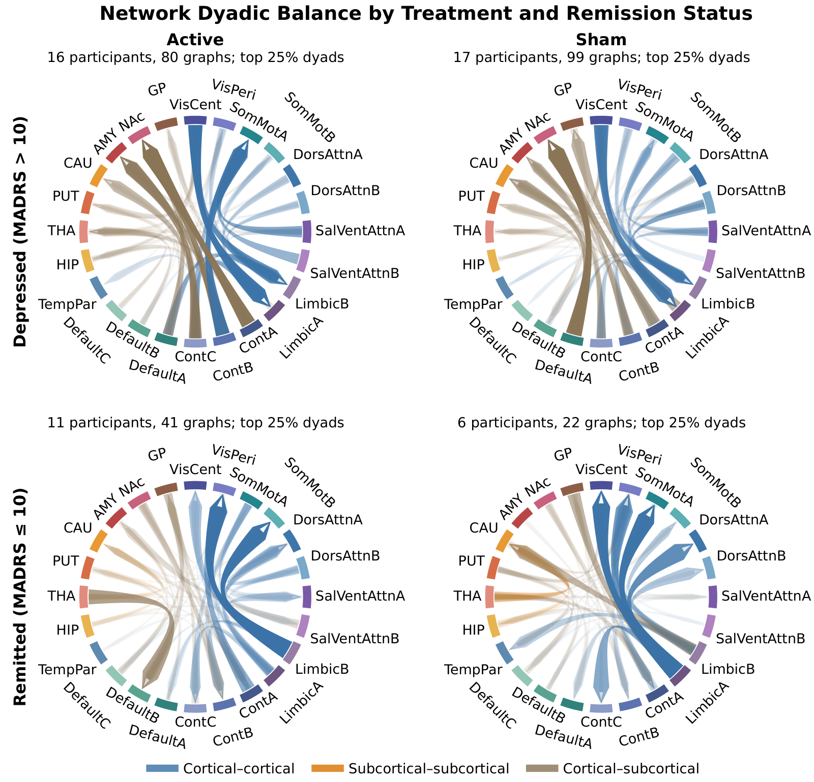

Time-series-informed graph construction
ROI node features are summary statistics of each ROI's time series under within-ROI and whole-brain normalizations, accommodating scans of varying duration.

Major depressive disorder is heterogeneous in symptoms and treatment response, which limits individualized care, particularly in treatment-resistant depression. Brain networks are consistently implicated, but their alterations are distributed across many regions.
We asked whether a graph model built on the brain's functional-network organization can classify each resting-state fMRI scan as remission or persistent depression at the time of scanning and identify network interactions associated with treatment. Using longitudinal data from a randomized, sham-controlled Stanford Neuromodulation Therapy (SNT) trial (NCT04739969), we developed NetHGL, a graph neural network that learns network-level representations from fMRI through intra-network message passing, hierarchical aggregation, and cross-network interactions.
NetHGL achieved higher mean performance than conventional machine-learning and graph-neural-network baselines, with an area under the receiver operating characteristic curve of 0.717 (95% CI, 0.665–0.770), balanced accuracy of 0.663 (0.614–0.712), and specificity of 0.700 (0.600–0.790) across 10 subject-level splits. Model interpretation revealed distributed remission-associated network differences, with thalamic interactions with cortical and striatal networks emerging as a prominent treatment-related component.
These findings suggest that NetHGL captures clinically relevant whole-brain states. They point to reorganization of these cortical–subcortical interactions as a candidate correlate of remission after active SNT.
ROI node features are summary statistics of each ROI's time series under within-ROI and whole-brain normalizations, accommodating scans of varying duration.
The model learns community-aware ROI embeddings, pools them into network-level nodes with learned weights, and passes messages among networks. It retains ROI-level detail within networks while modeling higher-order interactions among them.
Learned attention on network-level edges is analyzed to identify interactions associated with remission and treatment, generating hypotheses about pathways of treatment response.
Method
Each scan is parcellated with a combined atlas: 400 cortical regions from the Schaefer atlas, assigned to the 17 Yeo functional networks, plus 50 subcortical regions from the Tian Scale III atlas, grouped into 7 structures. That gives 450 ROIs in 24 networks. NetHGL passes messages among the ROIs of each network, pools every network into one node with learned weights, lets the 24 network nodes attend to one another, and combines them in a weighted ensemble that classifies the scan as depression or remission. The graph is the same for every scan; scans differ in their node features and in the attention the model assigns.

Results
Relative to the seven baselines, NetHGL achieved the highest mean value of every evaluated metric across 10 balanced random participant-level splits. Its AUC advantage over every baseline was significant under the normal approximation (Holm p ≤ 0.048); the differences from GAT and BrainGNN remained significant under the t(33) sensitivity analysis.
| Model | ACC | Balanced ACC | AUC | Specificity | Recall (+) | Precision (+) | F1 (+) |
|---|---|---|---|---|---|---|---|
| SVM | 0.516[0.462–0.574] | 0.565[0.513–0.637] | 0.604[0.533–0.702] | 0.657[0.539–0.799] | 0.473[0.396–0.563] | 0.823[0.705–0.917] | 0.589[0.500–0.659] |
| Random Forest | 0.528[0.471–0.584] | 0.550[0.481–0.626] | 0.594[0.503–0.708] | 0.590[0.440–0.747] | 0.509[0.440–0.574] | 0.810[0.690–0.902] | 0.592[0.508–0.651] |
| CNN | 0.569[0.517–0.626] | 0.547[0.474–0.630] | 0.632[0.557–0.728] | 0.507[0.354–0.672] | 0.588[0.532–0.661] | 0.797[0.701–0.888] | 0.669[0.619–0.714] |
| GCN | 0.600[0.560–0.642] | 0.608[0.565–0.659] | 0.663[0.621–0.716] | 0.623[0.538–0.724] | 0.593[0.540–0.655] | 0.841[0.755–0.911] | 0.691[0.642–0.728] |
| GraphSAGE | 0.616[0.570–0.666] | 0.616[0.565–0.670] | 0.678[0.622–0.755] | 0.617[0.514–0.718] | 0.616[0.562–0.687] | 0.849[0.772–0.915] | 0.705[0.661–0.743] |
| GAT | 0.587[0.551–0.629] | 0.589[0.551–0.633] | 0.646[0.609–0.699] | 0.593[0.515–0.676] | 0.585[0.543–0.642] | 0.831[0.748–0.899] | 0.679[0.641–0.711] |
| BrainGNN | 0.599[0.560–0.643] | 0.621[0.593–0.656] | 0.650[0.614–0.700] | 0.663[0.611–0.731] | 0.580[0.529–0.637] | 0.860[0.780–0.920] | 0.682[0.634–0.721] |
| NetHGL (ours) | 0.643[0.598–0.692] | 0.663[0.614–0.712] | 0.717[0.665–0.770] | 0.700[0.600–0.790] | 0.626[0.571–0.689] | 0.877[0.806–0.933] | 0.727[0.683–0.764] |
Ablations
All four ablations reduced mean performance across all metrics, and all four AUC reductions were significant (Holm p ≤ 0.0042). Removing network-level message passing produced the largest decline, followed by grouping the cortex into 7 instead of 17 networks.
| Configuration | AUC | ΔAUC | Balanced ACC | Specificity | Recall (+) | F1 (+) |
|---|---|---|---|---|---|---|
| Cross-network ROI message passing | 0.668[0.616–0.725] | −0.049 | 0.629[0.586–0.675] | 0.653[0.557–0.753] | 0.604[0.560–0.661] | 0.702[0.661–0.734] |
| Mean ROI-to-network pooling | 0.662[0.613–0.718] | −0.055 | 0.608[0.561–0.658] | 0.633[0.529–0.720] | 0.583[0.532–0.654] | 0.683[0.639–0.724] |
| No network-level message passing | 0.547[0.511–0.593] | −0.170 | 0.544[0.512–0.584] | 0.557[0.484–0.646] | 0.531[0.481–0.573] | 0.634[0.572–0.670] |
| 7 cortical networks | 0.629[0.573–0.696] | −0.088 | 0.600[0.554–0.655] | 0.623[0.523–0.740] | 0.577[0.522–0.648] | 0.678[0.635–0.714] |
| Full NetHGL (17 cortical networks) | 0.717[0.665–0.770] | — | 0.663[0.614–0.712] | 0.700[0.600–0.790] | 0.626[0.571–0.689] | 0.727[0.683–0.764] |
Findings
Network balance is a network's outgoing minus incoming attribution toward the remission output, computed on held-out test scans. The directions are those of the model's message passing; the physiological direction of influence remains open.
In a descriptive contrast, remitted scans showed a broad cortical shift toward greater outgoing relative to incoming attribution compared with depressed scans, particularly across control, default-mode, dorsal-attention, and salience/ventral-attention networks. Peripheral visual, somatomotor, and temporal parietal networks shifted toward incoming dominance.
Subcortical structures mostly moved the other way: the hippocampus, caudate, amygdala, and nucleus accumbens shifted toward lower outgoing dominance, while the thalamus and globus pallidus shifted toward outgoing dominance.
Largest contrasts (SD units): caudate −0.41, peripheral visual −0.36, temporal parietal −0.36, ContC +0.32.

We tested whether the association between each network's balance and concurrent remission differed between active SNT and sham. Of the 24 networks, only the thalamus showed a significant treatment-by-balance interaction after family-wise error correction.
Relative to sham, remission under active SNT was associated with lower thalamic source dominance: less outgoing relative to incoming thalamic attribution.
Thalamus: interaction odds ratio 0.14, pFWER = 0.006.

For each of the 24 networks we removed, or retained only, its outgoing, incoming, or all incident network-level edges, and compared the change in the model's output score for remission with matched control perturbations.
Only removal of all edges incident on the thalamus produced a significantly greater reduction than the controls. Removing thalamic incoming or outgoing edges separately did not reach significance, nor did any retain-only condition or any other network.
Thalamus, all incident edges removed: pFWER = 0.0417.

As a post hoc follow-up, we examined the directional balance between the thalamus and each of the other 23 networks: thalamus-to-partner minus partner-to-thalamus attribution. Five treatment-by-balance interactions survived family-wise error correction.
Relative to sham, remission under active SNT was associated with less thalamus-to-partner attribution for DefaultC, ContA, SalVentAttnA, and CAU, and with more for ContB.

In an exploratory comparison, we looked at the highest-magnitude pairwise directional balances in four subgroups: active SNT and sham, each depressed or remitted. Depressed profiles were similar across treatment arms.
In the remitted profiles, default-mode and control networks showed lower outgoing relative to incoming attribution in several pairs involving subcortical networks, whereas visual and somatomotor networks showed greater incoming relative to outgoing attribution. These profiles are normalized within each subgroup and were not statistically tested.

Discussion
Cite
@article{nethgl2026,
title = {{NetHGL}: Hierarchical Graph Learning Identifies Remission-Associated
Network Organization in Treatment-Resistant Depression Following
Stanford Neuromodulation Therapy},
year = {2026},
note = {Preprint}
}